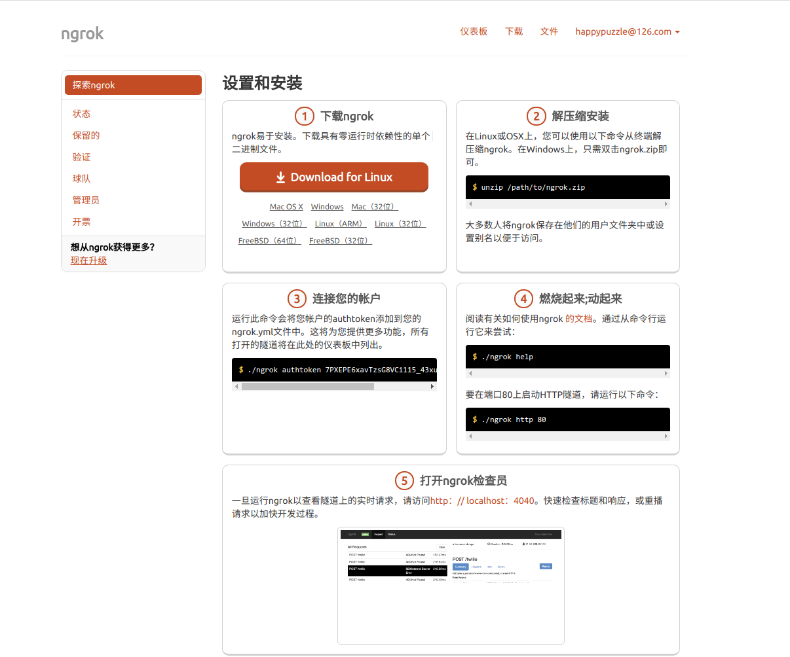

Use-Ngrok
内网穿透
一句话解释就是 把自己的电脑用作服务器可以让外人访问到
https://ngrok.com/
https://www.ngrok.cc/
前者国外 后者国内
https://ngrok.com/
https://dashboard.ngrok.com/user/signup 先注册一个账号
注册完成后 再到 https://dashboard.ngrok.com/get-started 看着这个文档来操作吧

https://www.ngrok.cc/
https://www.ngrok.cc/login/register 也是注册一个账号
完成后 就 emmmm 你会理解的
你不需要立马弄明白所有的东西,不过随着你的不断学习和使用.它的参考价值会越来越高.
2018年08月04日 更新
程序猿何苦为难程序猿